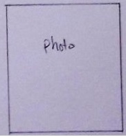

ihre Bewegungen anstatt dass diese eine Einheit bilden.
Gegenüber dem Cha-Cha-Cha und der Rumba sind Samba und Paso Doble oft fast doppelt
so viele Takte die Minute. Samba und Paso Doble werden im 2/4- und die anderen drei
im 4/4-Takt getanzt.

Anfänger: Di/Do/Sa 1900-2030
Fortgeschritten: Di/Do/Sa 2030-2200
Kursgebühr: Auf Absprache.
Ihr seit jederzeit herzlich Willkommen an einer der Termine zum schnuppern vorbei zu kommen. Bringt Kleidung mit in der ihr euch frei bewegen könnt.